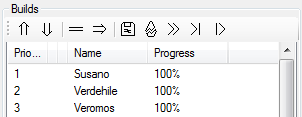
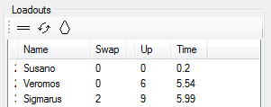
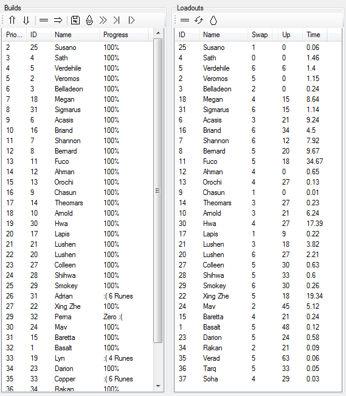
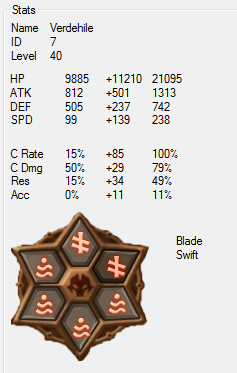
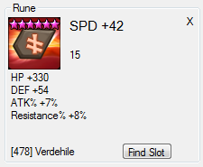

Rune Manager
Here is a quick guide to the things in this program.
This version of the Guide was created for 0.1.1.0, so stuff may have changed.
Build Creating
Build Testing
Options
If you click some of the headers/titles, you can show/hide the section
Updates
Clearly the most important.
If you didn't know how to use the program and I released a user guide, how would you know to get it?

The "What's New" button will give a little info on the latest additions.
The "Download" button will direct to a webpage to grab the latest version
Monsters
The first thing you'll want, is to load up your Monsters and Runes.
Currently, you can either manually enter them in through
SWarFarm
or grab them by using
SW Proxy.
You'd need to [Name] > Import/Export > Export Optimizer JSON from SWarFarm.
Once you've got a nice JSON file (like 12345678-optimizer.json from SWProxy), click the nice 'Load' button like below.
You will definately want to load this save on start-up.
If you've already got a start-up save, it will ask if you want to overwrite it.
So this is the list of all the monster that it dug out of save.json
Priority is mostly harmless, ID and Name are loaded from the Save for each Monster.
Double-clicking an entry will create a
build.
Buttons
Do mostly nothing.

Do mostly nothing.

Create a build for the selected Monster.
Reload the entire save (Monsters & Runes).
Unequips all the runes from all the Monsters.
Unequips all the runes from the selected Monsters.
Builds
First off, this box:
If you want to use currently equipped runes in new builds, check it.
If you want to update runes without shuffling them around, uncheck it.
This is the list of builds you've made.

The priority is a nice number to show which order they are generated in (how they appear on the list).
ID and Name is the monsters, check the Monster list.
Progress is either how far it's through generating builds, or the result (100% or fail!)
Double-clicking an entry will allow you to modify the
build.
Buttons
Move a build up in the order.
Move a build down in the order.

Remove a build from the list.
Run the selected build.
Save all builds & changes. Also happens when you close the program.
Force unlocks all the runes.
Removes all loadouts, runs all builds.
Runs all builds before the selected build.
Runs all builds that don't have a loadout.
Loadouts
Here's all the fresh builds.

This list contains a loadout that was generated based on the selected criteria in the associated build.
ID and Name is for the Monster used in the loadout.
Swap is either a number which is the number of runes changed, or two numbers (0/3) which is swapped runes that are [unassigned runes] / [assigned to different monster]
Up is the sum of the level-ups required.
Time is the number of seconds it took to generate the build, helpful if you leave a lot running and you want to find
the long ones.

Buttons
Removes loadout, unlocking the runes.
Removes all loadouts, unlocking runes.
Locks the runes in the selected loadouts.
Looks at these sweet stats.

I've tried to make it look like what you'd see in Summoners War.
The problem is, with Leader and Shrines, you'll see less stats. :(
Clicking any of the runes will show a box like...
This sick rune.

Again, it's styled after Summoners War, but with extra info like it's Rune ID (the number in square brackets)
Also, the +LEVEL is under the innate and the current location is at the bottom
The Find Slot button will show all the runes you have for that slot.
Shrines
Here you can set what level/effect your shrines have.
More will be added later.